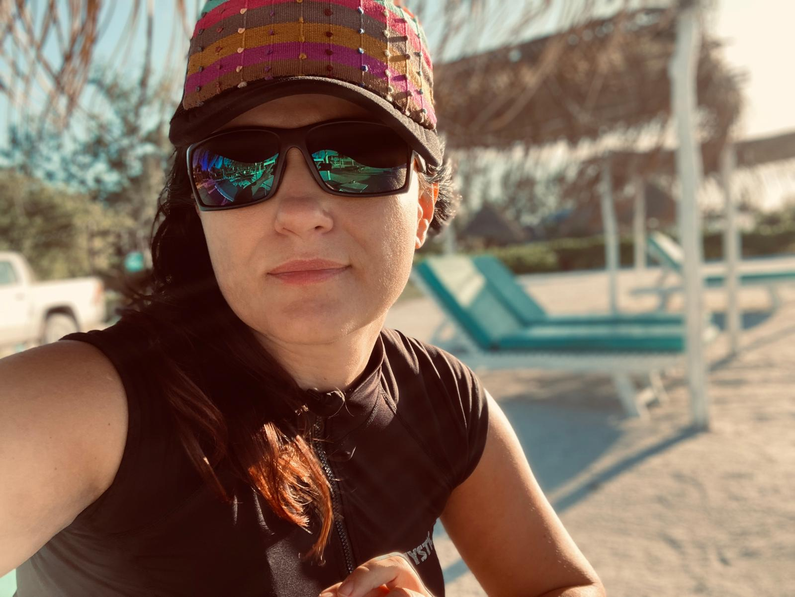

„Strach z Ameriky většinou není z Ameriky. Je z toho, že ti nikdo neukázal, jak to tam reálně vypadá.“
Ten hlas, co říká, že na to nemáš, se dneska plete.

Než jsem poprvé letěla sama, měla jsem v prohlížeči otevřených přes 30 záložek. Fóra, blogy, tabulky. Čím víc jsem četla, tím míň jsem věděla, co dělat první. Přesně tenhle zmatek jsem chtěla tomuhle průvodci vzít. Žádných 30 záložek. Jeden hlas, co řekne: tohle teď, tohle potom. Na tobě je jediné: jít pomalu a nevzdat to. To ostatní zvládneme spolu. Věřím ti.
Tady bude tvoje uvítací video
Až ho natočíš, ulož ho jako video/uvitani.mp4 a náhledový obrázek
jako video/uvitani-poster.jpg. Přehrávač se objeví sám, nic dalšího
se nastavovat nemusí.
pojď, ukážu ti to ↓
🧭 Moje cesta
Odlet za
– dní
Destinace
–
ESTA
Čeká
💡
Než začneš, 2 věci, ať tě nepřekvapí. Kurz běží v prohlížeči, takže
nic neinstaluješ a nikam se neregistruješ. Když si ho přidáš na plochu telefonu, otevře
se ti jako aplikace a Trezor pak funguje i bez signálu. A druhá věc: časovou osu i
upozornění ti kurz skládá podle tvého termínu, takže u některých modulů uvidíš
poznámku, která se týká zrovna tvé cesty.
Zabere to 15 minut. Zbylých 6 modulů počká, až budeš mít chvíli příště.
Tvoje moduly
Tvoje cesta ke dni odletu
Modul
Název modulu
Obsah tohohle modulu se ještě připravuje.
Tady budou kroky, vysvětlení a pasti, na které si dát pozor.
Tady budou kroky, vysvětlení a pasti, na které si dát pozor.
Klikni, až si tím projdeš. Letadélko nahoře popojede.
🎉
Funguje i offline
Trezor
Ulož si sem ESTA, letenky a rezervace. Zůstane to jen v tomhle zařízení, takže to najdeš i v letadle nebo bez signálu na letišti.
Hotel, Airbnb nebo adresa známých, na to se ptají u imigrační kontroly.
Uloženo ✓
Číslo žádosti, datum platnosti, nebo si sem vlož odkaz na PDF.
Uloženo ✓
Číslo rezervace, čas odletu, přestupy.
Uloženo ✓
Potvrzení hotelu, půjčovny auta, cokoliv se bude hodit na místě.
Uloženo ✓